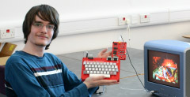

Language: English | Русский
Welcome! On this website, you can find links to my electronics projects. If you want to make any of these yourself, you can have the PCBs manufactured by a fabricator such as JLCPCB, Elecrow or PCBWay. Most components can be purchased at Mouser or Digikey; both companies ship worldwide.
If you have any questions relating to a circuit or you'd like to suggest modifications/improvements, you can reach me at my email address:
al5338 { letter "a" with a circle around it } seznam { full stop/period/point } cz
I check my inbox approximately once per week.
All my creations are open source; you are free to distribute, modify and sell them however you like.
Atari's original "Pong" circuit from 1972, separated into five miniature 100x100mm PCBs to allow for modification and expandability.
A further development of the "Leningrad-1" ZX Spectrum clone. Fixes all the major issues with my first replica, while requiring less components!
Designed in Russia in the 1990's, this encoder converts TTL-level RGB video to PAL color composite video. It's a useful peripheral for the Leningrad-M computer, and plugs directly into it without requiring cables.
This games console is based on a circuit that was developed from scratch by a hobbyist in Japan during the 1980's. Over two dozen games have been written for it so far! This PCB-based version features plug-in cartridges and compatibility with common Sega controllers.
A handheld Z80 microprocessor trainer with 24KB of battery-backed memory, based on a circuit designed in Czechoslovakia in 1984. It's an excellent starting point for learning Z80 assembly!
One of Berlin's many unconventional timepieces in a desktop form factor. A simple, affordable circuit based on discrete CMOS logic.
A 48K Sinclair ZX Spectrum clone from 1988 that can still be built today using readily available components. Designed to be as simple as possible hardware-wise, requiring as few as 44 ICs (compared to around 60 ICs on most clones).
Designed in 1983 for troubleshooting the "Galaksija" homebuilt computer from Yugoslavia. A versatile TTL logic probe that indicates oscillation with 4 LEDs.
Small, simple audio amplifiers that can run at a supply voltage of 5-12VDC. Great for a variety of applications.
An SMS2 composite mod so seamless, it almost looks like it was installed by Sega themselves. No bodge wires or case drilling required!
Assorted interesting things - the "museum" section of this website.
If you find this website interesting, I recommend checking out these other sites!
Last updated on Nov 30, 2025.
This page was first uploaded on Mar 2, 2025.
https://www.Free-Counters.org
visitors since Dec 26, 2025.
Background image by tile-anon.
{kind=link}